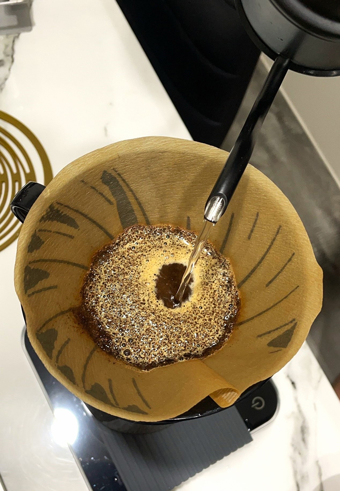

|  |
咖啡對我來說不只是一種飲料，更是一種生活方式，一種熱情，也是種文化的薰陶。從早晨的第一杯咖啡到午後的閒聊時光，咖啡伴隨著大家，成為了生活中不可或缺的一部分。
我記得自己第一次真正體驗到咖啡，是在一個冷冽的冬日的午後。那時的我對於咖啡仍一無所知，只是出於對新事物的好奇，跟著朋友走進了一家小而溫馨的咖啡店。我點了一杯簡單的那堤，然而當一杯熱騰騰的那堤端到我面前時，我馬上就被那濃郁的香氣吸引了。
第一口我喝到了綿密的奶泡，接著第二口，混合了牛奶和濃縮咖啡，這樣的平衡又滑順的口感讓我仿佛找到了一種全新的享受方式。從那一刻開始，咖啡就成為了我每天的日常。
隨著時間的推移，我漸漸地對咖啡產生了更深層次的興趣。我開始主動尋找各種不同的咖啡豆來嘗試，探索不同的烘焙方式和沖煮方法。從單品到綜合，從淺焙到深焙，我逐漸體驗到了咖啡的無窮可能。我也開始嘗試學習怎麼樣能沖煮出好喝，甚至是符合咖啡老饕朋友們期待的咖啡風味，一次次的鑽研後，我發現沖煮咖啡是一件非常有趣，但操作起來卻是需要一定程度上的細心的事情。
沖煮咖啡的過程中，可變因素相當的多，其中有咖啡豆的新鮮度、粉與水的沖煮比例、水質、水的溫度、手沖時注水的手法、注水力道輕重，及注入的次數等等……每種變因皆是環環相扣，且深深地影響著每一杯咖啡的風味。
這邊跟大家來分享一個有趣的沖煮變因—水質：一杯咖啡中有98%是水，所以水質的好壞一定也跟咖啡的品質有著正相關，其中水又可以分為硬水及軟水。
所謂的硬水，就是指水中含量較多的礦物質，例如鈣、鎂、鐵，其口感喝起來是較為澀口的，我們平常時喝的礦泉水就是此類，反之，軟水我們也稱為純水，指的就是水中含量礦物較少，喝起來較為甘甜，口感也較絲滑的水。
所以說，是不是用喝起來口感最好的水來煮咖啡，就可以獲得一杯最好喝的咖啡呢？答案是不對的。
為本身水中礦物質含量較少，所以在萃取咖啡的時候，有可能會把萃取率提高到22%以上，如此一來容易會把咖啡後段較為酸澀、苦澀的風味萃取出來，造成這杯咖啡在風味及口感的展現上較為可惜。我們稱之為［過度萃取］。
相反的，我們若是使用礦泉水來煮咖啡，充滿在水中的礦物達到飽和的狀態，使咖啡粉沒有辦法再把物質溶解進水中（有點像是國小自然課的實驗，一杯水不斷的攪拌並不斷地加入糖，到最後達到無法溶解的狀態），這樣的狀態，會使咖啡的萃取率降低到18%以下甚至更低，這杯咖啡最後會達到萃取不足的狀態，在風味上你會容易喝到有點淡的咖啡水的感覺，口感也會大打折扣。
我認為沖煮咖啡最好的水質，是介於軟水及硬水中間值的過濾水，濾除一部分的礦物後拿來煮咖啡，就能較容易的把咖啡的萃取率控制在範圍之內，就可以得到一杯，口感上達到平衡，風味展現又非常出色的咖啡。
關於咖啡豆的風味，也會因為不同的產區及處理法有著不一樣的展現，有些咖啡帶著精緻的水果酸香，有的散發著巧克力的濃郁，甚至是堅果般的香甜。
除了品嚐咖啡本身，其實每一杯咖啡背後也都有著一段精彩的故事，無論是來自哪個國家的咖啡豆，都承載著當地人民的勞動和文化。我喜歡了解不同產地的咖啡種植和製作工藝，這不僅讓我更加了解咖啡的來源，也增加了我對咖啡的尊重和欣賞，每一杯都像是一次心靈的放鬆和對話，讓我暫時遠離喧囂，靜心享受當下。
在未來的日子裡，我仍然期待著在這無盡的咖啡世界中不斷探索，不斷品味，享受咖啡帶來的每一份美好。